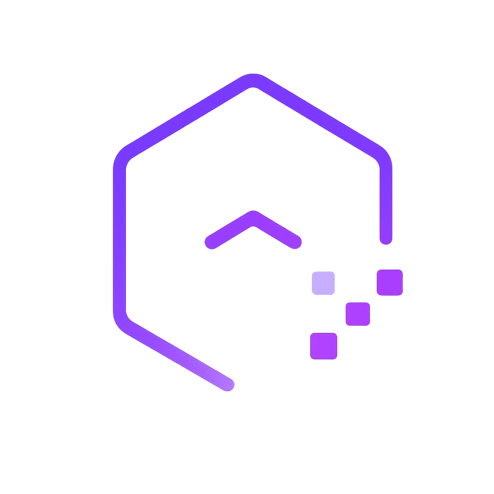

Mapa
LEGENDA
Sistema de referência: WGS 84 (EPSG:4326) · Gerado com GeoMatias — WebGIS para P&D e estudo de UI

Toda geometria pertence a uma camada. Todas as geometrias de uma mesma camada compartilham o mesmo tipo e os mesmos atributos.
Cor única, categorizado por atributo, graduado ou por regras — o mesmo editor de simbologia da aba "Vetores". Defina os atributos abaixo antes de categorizar.
Escolha o tipo de geometria. A cada toque em "+ Vértice", sua posição GPS atual vira um vértice.
Formatos aceitos: Shapefile (.zip contendo .shp/.dbf/.prj), .kml, .kmz e .geojson.
Escolha quais camadas incluir e o nome que cada uma recebe na exportação. O ícone de informação mostra os atributos e o estilo de cada camada.
Adicione um serviço de tiles (XYZ), um serviço WMS ou uma imagem georreferenciada por limites.
Arraste para mover, alças nos cantos para redimensionar. Salvo automaticamente no projeto.
Gera automaticamente, a partir dos indivíduos registrados, os produtos de laudo: mapa georreferenciado com pontos numerados, grade de fichas (foto + atributos) e planilha de campo (CSV). Cálculos de DAP, DAP equivalente (multifustes) e volume seguem a metodologia usada no laudo.
Dica: para o mapa sair como no laudo (imagem aérea de drone), carregue o ortomosaico como raster do tipo Imagem — ele é lido sem bloqueio de CORS. Bases de satélite XYZ (Google/Esri) funcionam na maioria dos casos, mas podem ser bloqueadas pelo navegador.
Defina os campos que serão preenchidos ao criar pontos, linhas e polígonos. Os valores acompanham cada feição e são incluídos na exportação.
Levanta os polígonos da camada na vista 3D, com altura proporcional a um atributo numérico.
Preencha os valores desta geometria.
Anexe ou tire uma foto do indivíduo. A identificação por imagem (Pl@ntNet) pré-preenche espécie e família; as fotos de referência (GBIF) ajudam a confirmar visualmente. A identificação é sempre uma sugestão — confirme antes de salvar.
Fotografe a árvore inteira com uma referência de comprimento conhecido encostada no tronco e vertical. A escala da referência vale para toda a árvore desde que a câmera esteja nivelada — por isso o nível abaixo é obrigatório.
Contorna automaticamente um objeto a partir de um raster de imagem já adicionado ao projeto. Roda inteiramente no navegador (modelo SlimSAM, ≈40MB, baixado do Hugging Face na primeira vez e cacheado pelo navegador). Funciona apenas com rasters do tipo Imagem (upload local) — camadas WMS/XYZ de terceiros normalmente bloqueiam a leitura de pixels por CORS.
Sem uma foto à mão? O botão acima adiciona uma imagem de exemplo (copa de árvore sintética) já pronta para segmentar.
Depois de analisar: toque no mapa sobre o objeto, dentro da área do raster. Toque normal = ponto positivo (é isso). Shift+toque = ponto negativo (não é isso). A prévia da máscara aparece sobre o mapa a cada toque.
Escolha a camada raster ou o mapa base que ficará do lado direito da cortina. As demais camadas permanecem ao fundo, visíveis do lado esquerdo.
Pesquise camadas publicadas em serviços OGC de catálogos conhecidos. Demarque um retângulo no mapa para restringir a busca à sua região de interesse.
O projeto (camadas vetoriais com atributos, rasters, mapa base e enquadramento) é salvo automaticamente no navegador e restaurado ao reabrir a página. Use o arquivo .geomatias.json para backup ou para levar o projeto a outro dispositivo.
Define o sistema de referência usado na leitura de coordenadas do mapa e na exportação em Shapefile (o .prj é gravado automaticamente para o sistema escolhido). GeoJSON e KML/KMZ seguem sempre WGS 84 (EPSG:4326), conforme exigido por esses formatos.
Grava a tela (ou aba) do navegador enquanto você navega o mapa — nenhum dado sai do seu dispositivo. Quando o navegador pedir o que compartilhar, escolha "Esta aba" (quando disponível) para gravar só o GeoMatias.
Edite os valores diretamente nas células — as alterações são salvas automaticamente. Use o botão de localizar para centralizar a feição no mapa e ✕ para removê-la.
Registro cronológico das ações realizadas nesta sessão (desenho, exclusão e importação de feições). Serve como rastreabilidade — não permite reexecutar ações; use "Desfazer/Refazer" para isso.
Checagens: auto-interseção, orientação/fechamento de anéis, coordenadas duplicadas consecutivas, geometrias degeneradas e coordenadas fora de faixa. Nenhuma correção é aplicada sem sua ação.